Heute
Dokumente durchsuchen, relevante Stellen kopieren, im Sprachmodell zusammenkopieren — und hoffen, dass nichts Wichtiges fehlt. Antworten ohne Quelle bleiben Vermutungen.
Mit Neural Nautic
Frage, Quellen, Kontext und Antwort werden als nachvollziehbare Kette sichtbar. Jeder Schritt ist auditierbar.
Was steckt drin — für IT-Verantwortliche
Indexierung
Dokumente werden in semantische Abschnitte (Chunks) zerlegt, mit
Metadaten (Quelle, Seite, Datum, Berechtigung) versehen und als
Embeddings (numerische Repräsentation eines Textes) in einer
Vektordatenbank gespeichert. Wir nutzen
pgvector auf Supabase in EU Frankfurt.
Retrieval
Eine Anfrage wird ebenfalls als Embedding kodiert. Die Vektordatenbank liefert per Top-k-Suche die ähnlichsten Passagen. Ein Reranker ordnet sie nach tatsächlicher Relevanz neu — das hebt die Trefferqualität deutlich gegenüber reiner Vektorähnlichkeit.
Generierung
Erst dann wird das Sprachmodell aufgerufen — mit der Frage, den abgerufenen Passagen und einer klaren Anweisung: Antworte ausschließlich auf Basis der gelieferten Quellen. Wenn etwas fehlt, sag es.
Berechtigungsmodell
Jeder Chunk trägt die Zugriffsrechte des Quelldokuments. Ein Mitarbeiter sieht in der Antwort nur, was er auch im Originalsystem sehen dürfte. Row-Level-Security auf Datenbankebene erzwingt das.